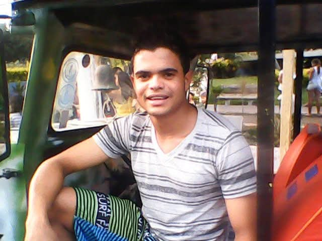

Myrella & Raimundo Neto
Uma jornada de amor
Dois caminhos que começaram tão distantes, mas que o destino tratou de unir...
Em Fortaleza, começa a história de uma menina encantadora
Seus primeiros cinco anos foram embalados pelo calor e alegria do Ceará
Até que São Paulo se tornou seu novo lar

Na Bahia, um jovem traçava seu próprio caminho
Desde cedo, mostrava dedicação aos estudos e sonhos maiores que seu quintal
Com determinação, construía uma vida cheia de propósito
Myrella crescia e seus sonhos tomavam forma, preparando-se para voos mais altos
Neto também sonhava com novas oportunidades e desafios. São Paulo também se tornou seu destino
A faculdade abriu novos horizontes para Myrella, que seguia determinada
Ele construía sua carreira, com dedicação e compromisso
E então, seus caminhos finalmente se cruzaram
Juntos, começaram a escrever sua própria história
Anos de companheirismo, superando desafios e construindo memórias
Na rotina diária, descobriram que o amor verdadeiro se revela nos pequenos gestos
Celebrando juntos, crescendo juntos, sonhando juntos
Bons anos que solidificaram uma certeza: eram destinados um ao outro
Após anos de companheirismo, decidiram que era hora de oficializar o que seus corações já sabiam
De uma história com raízes no Nordeste e cultivada em São Paulo, floresce agora uma família
Uma mensagem de amor e desejo para um futuro repleto de felicidade
Agora, mais palavras especiais de carinho e bênção...
Mesmo à distância, celebra com todo o coração o amor do seu filho
Myrella & Raimundo Neto
22/03/2025
E assim, começa o capítulo mais bonito desta história